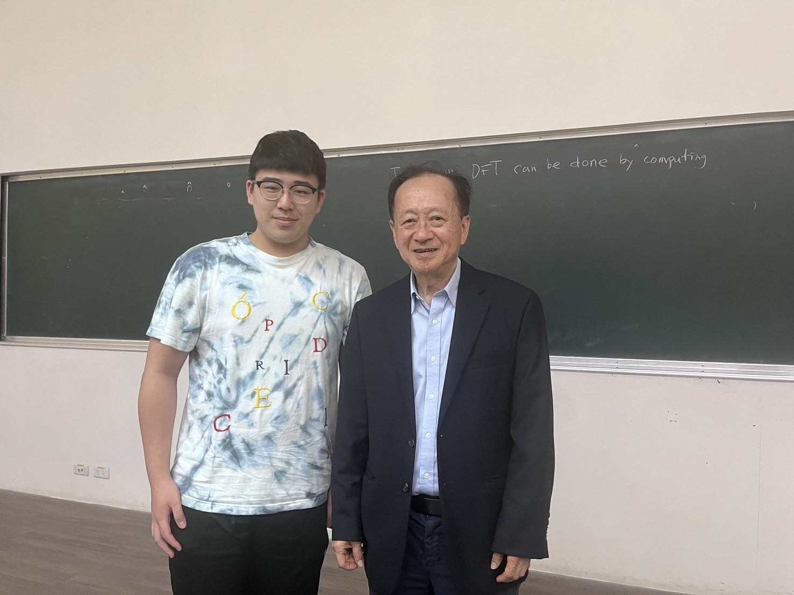
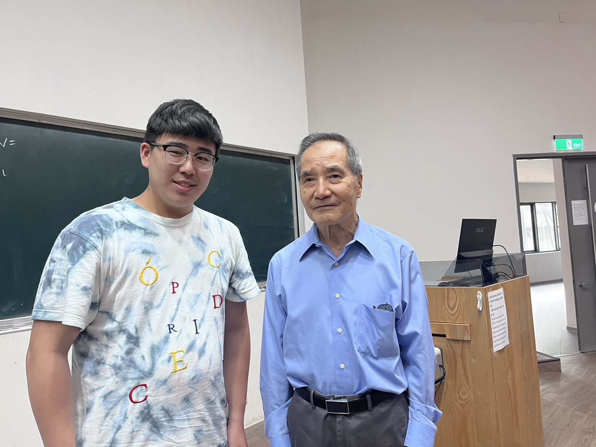

Written by Morris Fan @MXIC Building - NTHU, Hsinchu, Jun. 02, 2023

#CoSR Seminar 半導體研究學院書報討論
蔣尚義 博士 (現任鴻海科技半導體策略長)
"工程師要做的不是去探索宇宙的真理，而是實現書中的理論，進公司後為了趕在競爭對手前將產品做出來，不能一味追求真理，而是創新"
"簡報時先講結論，先讓聽者有興趣聽你報完，認為他值得花時間聽你講"
如果將光罩的phase shift改為180度，可以讓光罩邊邊更清楚
Immersion Lithography, 林本堅院士
SMO Source Mask Organization
用Diffusion就不能控制Overlap，因此後來推出Ion implementation，在Overlap上影響較小，Short Channel Effect
透過Shrink Channel Length可以加快電晶體運作速度，隨後又出現Tunnel Effect，Poly Silicon改用Metal Gate
FinFET 3D Structure，夾起來，增加對於Short Channel Effect的控制
Moore's Law has pushed the physic limitation，擠牙膏現象，新一代的手機會增加一堆新的功能
Metal Density要高，才能將Chennel Length縮短，舉GPU推8個Dram為例，Parallel Process，佔面積大，GPU OUTPUT有上千條線，
封裝和電路板技術進展相對落後，漸成系統性能的瓶頸
最先進矽工藝，只有極少數極大需求量產品才能用
半導體一用市場的演變觸發的商業契機，IoT的實現讓產品多元化
Sub-System Integration - 子系統集成
工程師除了要創新以外，做的事情(產品)要有市場，別人要願意買，在實驗室閉門造車不是好方法，要走出去了解客戶需要什麼，一代產品到下一代產品，賣價只能減不能增，做一分錢的東西(Info)，性能差一點，而不是七分錢，性能超好的東西
先進封裝，一開始只是為了讓GPU性能提升，余震華，早期做出來沒客戶要用，蔣爸一個一個找客戶。以前已位把DIE數量降低就好，後來發現三個比一個好
將IoT產品拆成十個Section，路是人走出來的，當初完全每想到會演變成小芯片世代
"積體電路的發展仰賴工程師不斷創新、未來發展從系統整體探求最佳答案"
Q: 中國半導體公司，中國台灣區別？
R: 兩年的經驗並不好，忽略一件事情，創新、物理一樣，但思維、看法不同，彎道超車，是強項也是弱點，因為半導體沒有彎道超車，要踏實去做；中國花太多錢投資了，中國半導體新創非常多，產品還沒做出來股票就大漲，是因為中國國企投資很多(他們的任務之一)，投資人獲利。很多廠商會把機台免費給台積測試，因為在研發上需要台積幫忙驗證，成功的話就是很好的廣告。一半私利、一半公司利，但如果員工個人利益非常大時，這就是錢花太多的缺點。中國人稱讚台灣人有紀律。
中國有利的點，台積8000人，中芯國際1200人，二者距離理論上是越拉越遠，但因為莫爾定律的關係減慢台積的速度，之後一定會趕上；美國人規定，太陽能電池全世界市場、面板可能是下一個，有自己生存下去的方法。
Q: 很多國家都想做半導體，那些產業會受到影響？那些在台灣會保有優勢？
R: 半導體有規模效應，能做3奈米、5奈比只有三間公司，研發上的開銷只佔台積8%，每年的花費都是數十個Billion，美國、中國現在要做半導體，遲早有一天會趕上，任何一個行業只要你做的好，沒那麼容易被淘汰掉，兩件事擔: 人工智慧GPT，自我學習的前途無量，原本以為程式設計師會比AI厲害，可以完成很多事；基因改造。人類經歷工業革命也沒有大失業，日子過得更好，三輪車、計程車為例，不管甚麼行業，要學會如何使用AI，用他而不適擔心被它取代掉。
Q: 生產半導體要規模化才能生產，回到Dram產業，鴻海、台塑兩天前說要做AI晶片，他們在想什麼？
R: 中國不是投資十間大企業，而是把一間做大，這是因為他們中央政府全力強。台塑想做Dram，鴻海是做系統整合，系統是外包給別人做的，鴻海有出口的優勢，鴻海想做電動車，鴻海將電動車視為電子產品，一台車2000元用在電子產品，400用在Power IC (Charging充電裝，1000V去做GaN, Silicon Carbi)，1000用在Camera，Integrated Circuit到Integrated Chips；鴻海不會跟台積競爭，商業切入點不同。
Q: 先進封裝有潛力發展，和傳統窄版封裝在同一個發展線上嗎？鴻海(增頂)在傳統式有優勢，之後會往先進封裝發展嗎？增頂是鴻海1000多間子公司的其中一間
R: 中國正在發展矽光子封裝，台灣也在做準備，分析矽光子未來的發展優勢？
Q: 人生會面對很多選擇，走錯路停損點怎麼設，如何避免走錯路？
R: 97年到台積電，帶小孩環台灣，遇到岔路不過是一條近、一條遠，最終都會到，怕失敗的話什麼都做不了了，做一個決定只要是差不多對的就可以認真做了，成功了就是做對的
Q: 大陸半導體平凡擴廠投資詐騙問題，四大人才都集中在IC Foundary，畸形發展對台灣的隱憂？鴻海效應
R: 過去碩士有7080%，學士只有2030%，大材小用的效應，是台灣的損失，沒有一件事是完美的。
"工程師要做的不是去探索宇宙的真理，而是實現書中的理論"
"岔路不過是一條近、一條遠，兩條路最終都會交會，如果怕失敗的話那什麼都做不了了，決定了就認真做，只要最後成功了那就是做對的決定"
Copyright © 2024, Chih-Chieh (Morris) Fan
All rights reserved. Please mention my name and source code for reference.